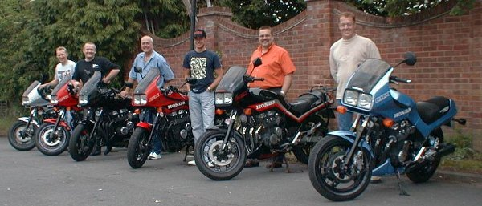
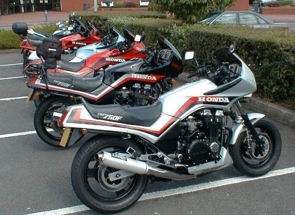
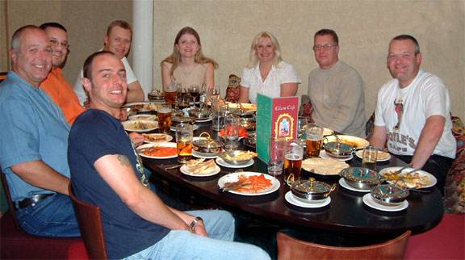
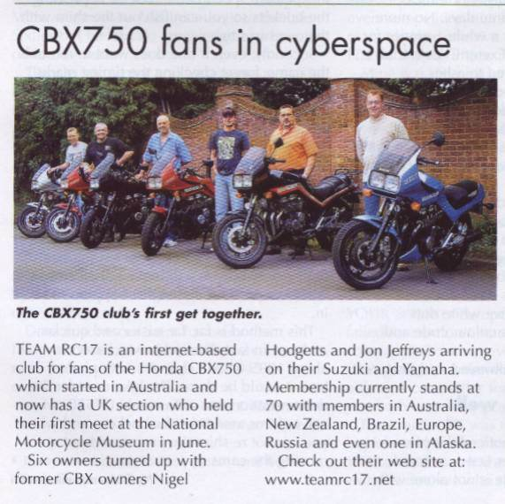

On the 6th and 7th of July, 2002, several English members of TeamRC17 got together at the National Motorcycle Museum near Birmingham. This report was written by one of the attendees, and has been submitted for publication in Classic Mechanics Magazine.
Report on the first meeting of U.K. members of Team RC17:

6 CBXs and 6 proud owners. From left to right: Andy Jordan, Paul McKenna, Steve Moody, Darren Moody, Ken Pickering, Kevin Robinson
Team RC17 is an internet-based club for owners and ex-owners of the Honda CBX750 and its variants. The club originated in Australia and has since spread worldwide. We currently have approximately 70 active members residing in Australia, New Zealand, Brazil, Europe, Russia and even one in Alaska. The Team stays in touch via email discussing anything of common interest and helping each other with troubleshooting, servicing and modifications to our machines.
The Website is a mine of information with pictures of members bikes, frequently asked questions and answers, maintenance details, model specifications, tuning and modifications, reviews and articles and even a complete email archive dating back to when the Team began.
There is a very interesting section on Team members’ projects, including Steve Oxley’s ongoing EFI project, Ted Palmer’s Comstar to 3 spoke alloy wheel changeover and Andre Kladler’s big tank conversion.
One of our New Zealand members is currently collating all members’ frame and engine numbers in order to build up a history of all the members bikes and sort them into age of registration, country of origin and time owned by current owner.
With several members of the team residing in the U.K., it was decided to arrange a meeting to see how many CBX750s we could get together in one place.
The date was set for June 6th, as this seemed to be a weekend that was the most convenient for members.
Unfortunately, as is always the way with these things, there were members who for various reasons couldn’t make it, but we did manage to assemble 6 CBX’s and also had two ex-owners come along, Nigel Hodgetts on his Suzuki GSX1400 and Jon Jeffries on his Yamaha FJ1200. Three members’ partners also attended, bringing the number up to 11.
We met at the National Motorcycle Museum in Birmingham, this being a fairly central location for those who could attend. After a leisurely browse around the museum and refreshments, we moved on to a hotel in Knowle, Solihull, where some of the Team were booked to stay the night.
After scrutinizing each others bikes and having a photo session, we progressed to the local Indian restaurant for a very enjoyable (and much needed) meal and an evening in the hotel bar for those staying over.
We think we now hold the record for the number of CBX750s gathered in one place, this being previously held by our Australian members (though we appreciate we all live a lot closer together in the U.K. compared to Australia!).
We intend to make this an annual event, and it would be great to see other owners or ex-owners next year.
The Team welcomes any new members, and anyone interested should visit our website at http://www.teamrc17.net/
Report by Andy Jordan, photographs by Jon Jeffryes

A line up of CBXs, parked outside the museum

What they all really came for – the meal! Clockwise from front: Darren, Steve, Ken, Andy, Lucy, Jeannie, Kevin, Paul

The article that got printed in the September edition of CM and M